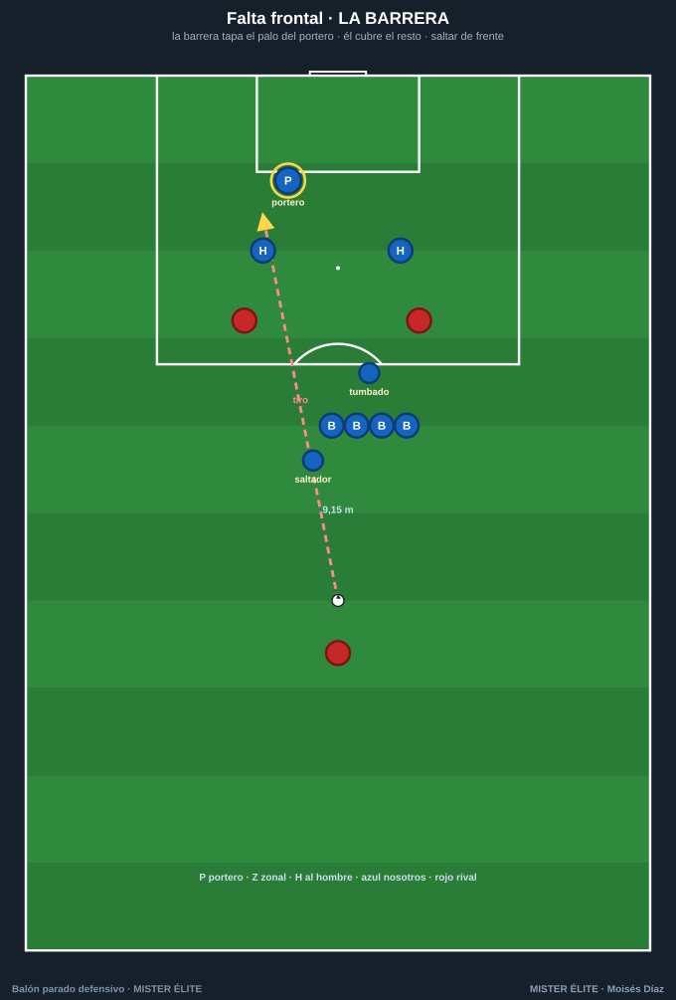
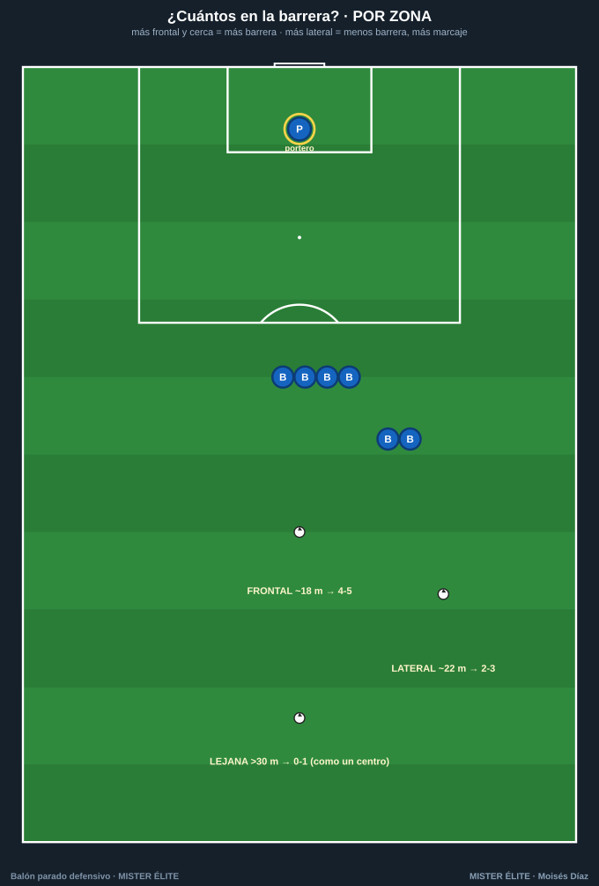
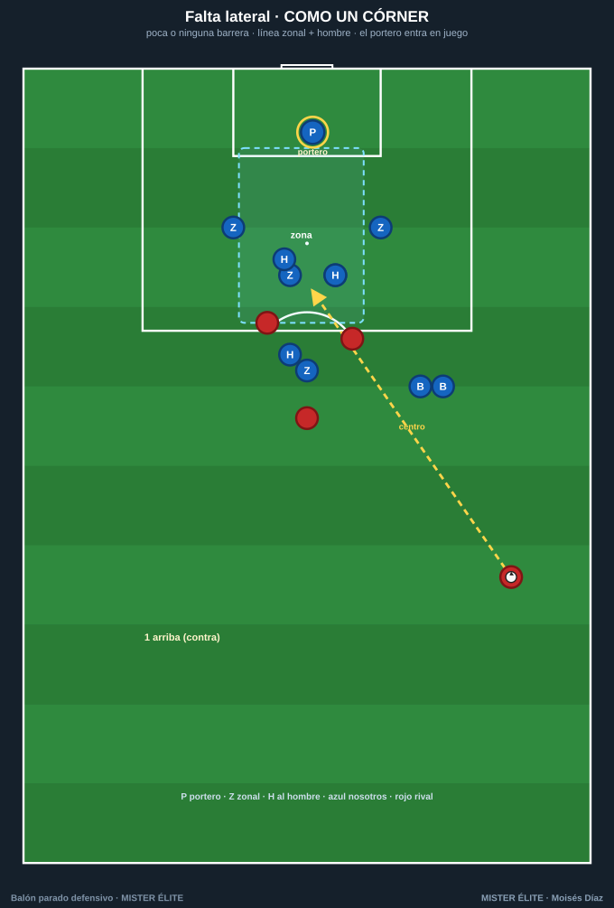

Defender las faltas
La falta se defiende según dónde esté: frontal (tiro) → barrera; lateral (centro) → como un córner. Y siempre, un detalle reglamentario: un hombre sobre el balón para impedir el saque rápido hasta tener todo colocado.
La barrera (falta frontal)

- La barrera tapa el palo del portero (el más cercano a la falta); el portero cubre el resto de la portería. La barrera protege un lado, el portero el otro.
- Quién la alinea: el portero (ve el ángulo balón-palo), a través de un anclaje (el jugador del extremo de la barrera, que mira al portero hasta que lo fija y luego gira al balón).
- Cómo se salta: hombro con hombro, compactos sin huecos, de frente (nunca girarse), saltar al golpeo con los brazos pegados al cuerpo (manos arriba = penalti).
- El tumbado: un defensor tumbado de costado detrás de la barrera, cabeza al primer palo, para tapar el disparo raso por debajo de la barrera al saltar. Imprescindible en faltas frontales cercanas.
- El saltador: un jugador valiente que sale de la barrera hacia el balón al golpeo, para achicar el ángulo de un pase raso/ensayado.
- Fuera de la barrera: marcaje mixto (hombre sobre los peligrosos + zonas en los puntos calientes).
Regla práctica del nº de jugadores: 6 para un balón a ~18 m central, y quita uno por cada ~3 m que se aleje. Frontal-central peligrosa → 4-5; diagonal → 2-3; lejana → 0-1.
¿Cuántos en la barrera? (por zona)

- Frontal ~18 m → 4-5 (tapar el tiro y el raso bajo la barrera).
- Lateral ~22 m → 2-3 (ya es más centro que tiro).
- Lejana > 30 m → 0-1: no hay barrera, se defiende como un centro/córner.
Falta lateral (defender como un córner)

- Poca o ninguna barrera (1-2 solo para tapar el tiro al palo si el ángulo lo permite).
- Línea zonal cerca del propio gol + marcaje de los rematadores; el portero entra en juego (sale a su zona).
- Vigila el bloqueo sobre el último defensor de la línea (recurso típico de las faltas laterales).
El fuera de juego como arma
En faltas laterales y al área, la línea sube de forma coordinada en el momento del golpeo para dejar en fuera de juego a los rematadores que esperan al fondo.
- Un solo líder (normalmente un central) ordena la subida; todos suben a la vez.
- El fallo más común: un defensor llega tarde y deja a todos en juego.
- Requiere jugadores rápidos y sincronizados; no abusar (1-2 veces por partido); voz alta y clara.
Errores comunes y reglas de oro
| Error | Regla de oro |
|---|---|
| Conceder el saque rápido | Siempre un hombre sobre el balón hasta tener la barrera |
| Barrera con huecos o mal alineada | El portero alinea, el anclaje ejecuta; tapa el primer palo |
| Saltar girándose o con los brazos arriba | Compactos, de frente, brazos abajo |
| Nadie tumbado → gol raso | Un tumbado en faltas frontales cercanas |
| Rematadores sin marca | Cada hombre peligroso marcado (zona + hombre) |
| Línea descoordinada | Un solo líder para la subida / fuera de juego |